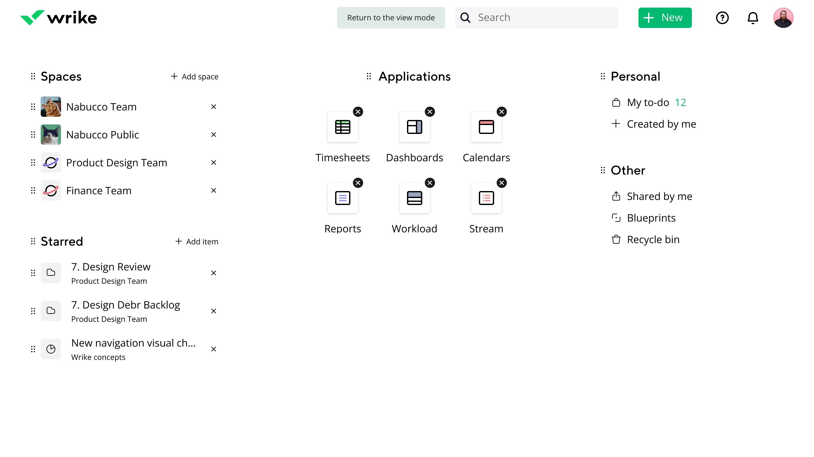
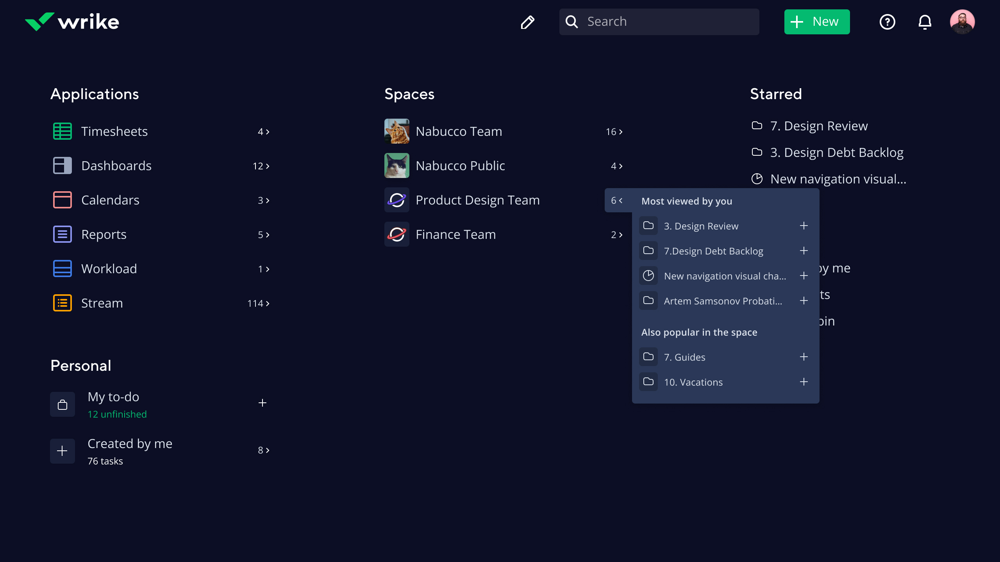

<!DOCTYPE html>
<html>
  <head>
    <meta charset="utf-8"/>
    <meta name="viewport" content="width=device-width, initial-scale=1.0"/>
    <meta property="og:type" content="article"/>
    <meta property="og:title" content="Дизайн-хакатон: домашняя страница сервиса Wrike • Артём Самсонов • Продуктовый дизайнер"/>
    <meta property="og:description" content="Краткая презентация того, как я визуализировал минималистичный концепт домашнего экрана"/>
    <meta property="og:image" content="http://artemsamsonov.com/img/default.jpg"/>
    <link href="https://fonts.googleapis.com/icon?family=Material+Icons" rel="stylesheet"/>
    <link rel="stylesheet"/><!-- Yandex.Metrika counter --> <script type="text/javascript" > (function(m,e,t,r,i,k,a){m[i]=m[i]||function(){(m[i].a=m[i].a||[]).push(arguments)}; m[i].l=1*new Date();k=e.createElement(t),a=e.getElementsByTagName(t)[0],k.async=1,k.src=r,a.parentNode.insertBefore(k,a)}) (window, document, "script", "https://mc.yandex.ru/metrika/tag.js", "ym"); ym(88097279, "init", { clickmap:true, trackLinks:true, accurateTrackBounce:true, webvisor:true }); </script> <noscript><div></div></noscript> <!-- /Yandex.Metrika counter -->
    <title>Дизайн-хакатон: домашняя страница сервиса Wrike • Артём Самсонов • Продуктовый дизайнер</title>
  <link href="./css/style.bundle.css" rel="stylesheet"></head>
</html>
<body class="body_light">
  <header class="header header_light">
    <div class="header__logo"><a class="header__logo-link" href="index.html">Артём Самсонов</a></div>
    <!--div.header__menu
    a.header__menu-elem(href="http://artemsamsonov.com/skills") Навыки
    a.header__menu-elem(href="http://artemsamsonov.com/my-experience") Работы
    a.header__menu-elem(href="http://artemsamsonov.com/#contacts") Контакты
    -->
  </header>
  <div class="content">
    <div class="article">
      <h1>Дизайн-хакатон: домашняя страница сервиса Wrike</h1>
      <p class="article__annotation">Краткая презентация того, как я визуализировал минималистичный концепт домашнего экрана для продукта Wrike</p>
      <h2>Чистый и минималистичный</h2>
      <p>Концепт повторяет двухцветный логотип компании: функциональность домашнего экрана преимущественно чёрная, цветом выделены дополнительные акценты. Цвета взяты из палитры брендбука. Тени и границы используются только для Приложений, т.к. это самые важные элементы домашнего экрана</p>
      <p>Иллюстрация в правой части подвала может использоваться как Wroodle и меняться в зависимости от значимой даты.</p>
      <p class="article__image"><a href="../img/hakaton-01.jpg" target="_blank"></a>
        <!--span.article__image-caption-->
      </p>
      <h2>Два режима</h2>
      <p>У интерфейса есть два режима: использование и редактирование. Если пользователь захочет переместить любую секцию, он кликнет по иконке карандаша:</p>
      <p class="article__image"><a href="../img/hakaton-02.jpg" target="_blank"></a>
        <!--span.article__image-caption-->
      </p>
      <h2>Перетаскивание секций</h2>
      <p>Пользователь может перемещать секции в любуя ячейки сетки. У секций есть три вида отображения: центральный, основной и вторичный:</p>
      <p class="article__image">
        <iframe src="https://www.youtube.com/embed/RCoqb1qo-X4" title="YouTube video player" frameborder="0" allow="accelerometer; clipboard-write; encrypted-media; gyroscope; picture-in-picture" allowfullscreen></iframe>
      </p>
      <h2>Полезные действия</h2>
      <p>Для каждой сущности на домашнем экране есть дополнительные действия. Например, кликнув по иконке рядом со спейсом, можно посмотреть ваши наиболее популярные папки:</p>
      <p class="article__image"><a href="../img/hakaton-03.jpg" target="_blank"></a>
        <!--span.article__image-caption-->
      </p>
      <h2>Тёмная тема</h2>
      <p>Просто тёмная тема, основанная на цветах из брендбука:</p>
      <p class="article__image"><a href="../img/hakaton-04.jpg" target="_blank"></a>
        <!--span.article__image-caption-->
      </p>
      <p class="article__image"><a href="../img/hakaton-05.jpg" target="_blank"></a>
        <!--span.article__image-caption-->
      </p>
    </div>
  </div>
<script type="text/javascript" src="./js/bundle.js"></script></body>